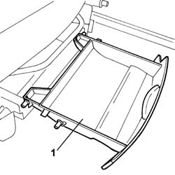
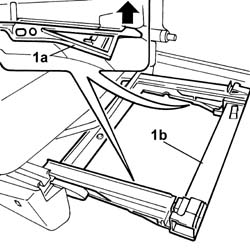

7065C56 ODDMENT COMPARTMENT UNDERNEATH FRONT SEATS - R.R.
- Path
- Procedures > 70 FITTINGS > 7065 SAFETY BELTS AND ACCESSORIES > 7065C ACCESSORIES AND DECORATIONS > 7065C56 ODDMENT COMPARTMENT UNDERNEATH FRONT SEATS - R.R.
- Kind
- repair procedure (removal / refitting; the operation number is the code)
- Applies to
- all engines; all production periods
- Interactive page
- https://sloeber94.github.io/elrnDB-fUlss/en/#/179007948
Applies to: all engines; all production periods
 Removing
Removing
 Refitting
Refitting1. Extract the oddments compartment.

Applies to: all engines; all production periods
1. Act on the clips (1a) and remove the oddments compartment assembly (1b).

Applies to: all engines; all production periods
Refitting
Removing- Place the oddments compartment and guides in position until they are heard to lock.
Topics that link to this page (8)
- 3350E30 LATERAL ACCELERATION AND YAW SENSOR R R
- 5010B39 FRONT CONNECTION FOR CENTRAL AIR DUCT TO REAR SEATS - R R
- 5010B45 DUCT FROM CLIMATE CONTROL SYSTEM - R R
- 5505A66 FRONT, CENTRE OR REAR SUN ROOF (ONE) NODE (DIGITAL NETWORK CONTROL UNIT) - R.R.
- 5580C14 AIR BAG ECU - R+R
- 7040L17 PASSENGER COMPARTMENT FLOOR FRONT CARPET - R R
- 7045A10 L/H OR R/H FRONT SEAT (ONE) - R+R
- 7045A23 FRONT SEAT MOUNTS - R R